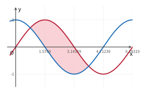

例題 6積分法 三角関数のグラフで囲まれた面積
\(0\leqq x\leqq2\pi\) において、曲線 \(y=\sin x\) と \(y=\cos x\) で囲まれる図形のうち、\(\dfrac\pi4\leqq x\leqq\dfrac{5\pi}4\) の部分の面積を求めよ。
解き方（まず考え方）
交点・上下関係を確認し、（上）\(-\)（下）を積分。\(\int\sin x=-\cos x\) を使う。
コツ2本の波に挟まれた形の面積を、積分で。
解答
STEP 1 交点を求める
\(\sin x=\cos x\) の両辺を \(\cos x\) でわると \(\tan x=1\)。\(0\leqq x\leqq2\pi\) で \(x=\dfrac\pi4,\ \dfrac{5\pi}{4}\)。

STEP 2 上下を確認する
区間の中の値 \(x=\dfrac\pi2\) で比べる。\(\sin\dfrac\pi2=1>\cos\dfrac\pi2=0\) だから \(\dfrac\pi4\leqq x\leqq\dfrac{5\pi}4\) で \(\sin x\geqq\cos x\)。
STEP 3 面積の式を立てる
\[S=\int_{\pi/4}^{5\pi/4}(\sin x-\cos x)\,dx\]
STEP 4 原始関数を求める
\(\int\sin x\,dx=-\cos x\)、\(\int\cos x\,dx=\sin x\)。
\[\int(\sin x-\cos x)dx=-\cos x-\sin x\]STEP 5 上端 \(x=\dfrac{5\pi}4\) を代入
\(\cos\dfrac{5\pi}4=-\dfrac{\sqrt2}2,\ \sin\dfrac{5\pi}4=-\dfrac{\sqrt2}2\)。
\[-\left(-\dfrac{\sqrt2}2\right)-\left(-\dfrac{\sqrt2}2\right)=\dfrac{\sqrt2}2+\dfrac{\sqrt2}2=\sqrt2\]STEP 6 下端 \(x=\dfrac\pi4\) を代入
\(\cos\dfrac\pi4=\sin\dfrac\pi4=\dfrac{\sqrt2}2\)。
\[-\dfrac{\sqrt2}2-\dfrac{\sqrt2}2=-\sqrt2\]STEP 7 （上端）\(-\)（下端）
\[S=\sqrt2-(-\sqrt2)=2\sqrt2\]
【答案（テストに書く形）】
\[2\sqrt2\]答
練習問題 6
- \(0\leqq x\leqq\pi\) で、曲線 \(y=\sin x\) と \(y=\dfrac{1}{2}\sin x\) で囲まれる図形の面積を求めよ。
- \(0\leqq x\leqq\pi\) で、曲線 \(y=\sin x\) と \(y=\dfrac{1}{3}\sin x\) で囲まれる図形の面積を求めよ。
- \(0\leqq x\leqq\pi\) で、曲線 \(y=\sin x\) と \(y=\dfrac{2}{3}\sin x\) で囲まれる図形の面積を求めよ。